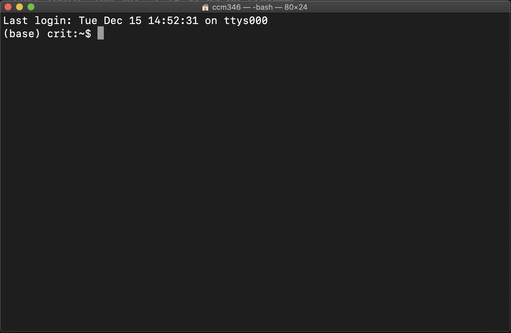
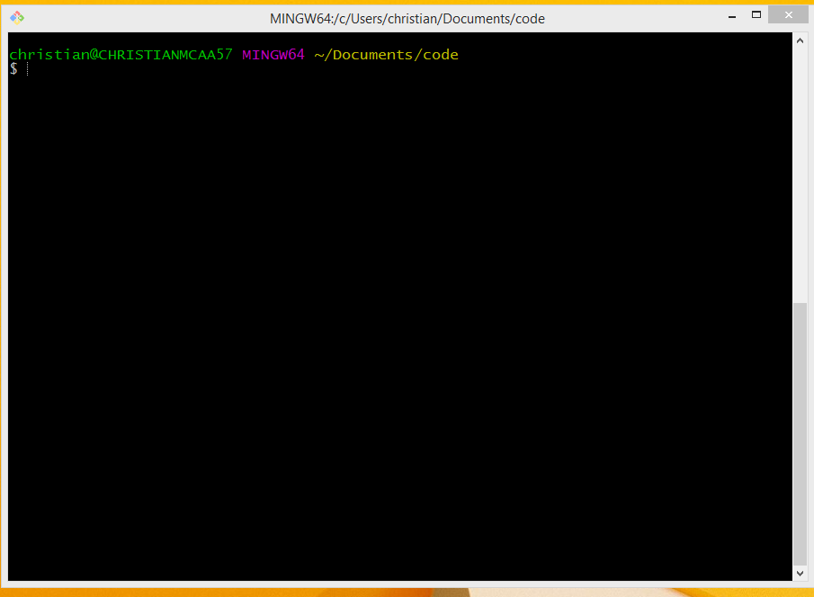

2 Introduction to the terminal
In this chapter, we’ll introduce what the terminal is, and discuss how we interact with it by speaking its language. We’ll also open your first terminal window, run your first command, and see the terminal “talk back” to us.
2.1 What is the terminal?
Think of using the terminal like dm’ing your computer.
Instead of clicking buttons or opening folders with a mouse or trackpad, you type commands in the command line asking your computer to do these things for you. Your computer reads your message and replies by immediately doing what you ask.
The Terminal (on Mac) or Git Bash (on Windows) are the names of the programs that can run a shell. They are just the text-based user interfaces where you will type these commands.
People (including the authors of this guide) will use the term shell, terminal and command line interchangeably. This means when we say “type into your shell”, “in your command line”, or “in your terminal”, we mean type at the prompt in your Terminal or Git Bash program. Later, we’ll use our Terminal from within Visual Studio Code.
In reality, there are some nuances:
- The terminal opens a window.
- Inside that, a shell runs.
- You interact with it through the command line interface.
In practical terms, just know they usually mean the same thing out in the wild.
The terminal might look a little old-school (and let’s be real: a bit scary 👻), but it’s one of the most powerful tools you can learn. People who work in code, data, security, and tech use it all the time.
Here’s just a few examples of what we can ask our computers to do using the terminal:
- List all the files in a folder
- Create a new folder
- Install programs
- Move files around
- Automate tasks
We can do all of these things by typing just a few words. But to communicate effectively with our terminals, we have to learn “speak” its language. In this guide, you’ll learn the basics of this language to get you started.
2.2 Speaking the terminal’s language
The programming language we will use for our interactions in the terminal is called Bash. Bash is a Unix-based program and most of the Internet runs on Unix (or Linux) computers.
Macs understand Bash natively, but Windows doesn’t understand Bash at all without the help of another program. This is why we downloaded Git and Git Bash in the prerequisites – so we can all speak the same language, regardless of the machines we’re using.
2.3 How to Open the Terminal
First things first, we need to actually open the Terminal on our machines.
For Macs, press
Command + Spaceto launch Spotlight, then type Terminal, and hitEnter/return.Once you launch it will look like this (though it may have a white screen):

Mac Terminal Look at the very top line to see if the term in the middle of the title bar is
bashlike above. If it sayszshinstead, go to the Change Mac shell to bash section in the troubleshooting chapter to fix it.
Tip: If you want, you can change the Terminal’s theme to make it more comfortable to look at by following the steps in the how to change your Terminal theme appendix.
- For Windows you can go to your Start menu and type in Git Bash and launch it.
It will look like this:

Tip: If you want, you can change the Terminal’s theme to make it more comfortable to look at by following the steps in the how to change your Terminal theme appendix
2.4 Your First Command: Saying Hello to the Terminal
Ok, now that the terminal window is open on your computer, let’s take a quick look at the text showing in the window when you launch to familiarize ourselves with basics of the interface.
When you launch the Terminal for the first time, you’ll probably see a prompt saying something like:
The default interactive shell is now zsh.
To update your account to use zsh, please run `chsh -s /bin/zsh`.DISREGARD THIS MESSAGE. Do not run this the command to update to zsh. Zsh is a similar language that Mac is transitioning to by default. However, we will use Bash for this guide to keep everyone on the same page, regardless of their operating systems.
If you accidentally switched to zsh already, go to the Change Mac shell to bash section in the troubleshooting chapter to fix it.

Let’s breakdown a few things from the screenshot above:
- Computer name: the characters before the
~is your computer’s name (you may not have known it even had one). - Current directory: The
~character is Terminal shorthand for your “base” directory on your computer. The value shown here will update as you move around to different folders on your computer. - User name: The part immediately after the
~is your username. - Command prompt: Lastly we have the $. This is the “prompt” where you type commands. (Note: if you’re on a Mac and see a % instead of a “$”, you may not be in Bash. Fix that by going to the Change Mac shell to bash section in the troubleshooting chapter)
You type your commands AFTER the $ and then hit Enter / return on your keyboard to run or execute them. We’ll practice doing just that in the next section.
2.4.1 Your First Command: Saying Hello to the Terminal
Let’s try your first real command: finding out where you are using the command pwd.
In the terminal prompt (remember, after the
$), type the following command:pwdPress
Enter/returnto run the command.
You should see Terminal respond with something like this:
/Users/yourname
or this
C:\Users\yourname
Depending on your system, the path may look a little different — and that’s OK.
So what just happened?
pwdstands for “print working directory.”- It simply asks: Where am I right now in the computer’s folder system?
- Your computer provides the following answer: your current folder — usually your “home” directory when you first open the Terminal.
2.5 🎯 Checkpoint
You’ve made it to the end of chapter 1. Good job!
You’ve now:
- Opened the Terminal.
- Typed and run your first command.
- Seen your computer respond back.
You’re officially no longer a terminal beginner. 🙌
A few quick tips before you move on to the next chapter:
- Command Case Matters in the Terminal:
pwdis not the same asPWD. - Press
Enter/returnto run things: Every command you type needs anEnter/returnto run. - You can’t break things easily: Typing
pwdwon’t hurt your computer.
(In fact, almost everything we’ll do in this guide will be safe)
Next up:
We’ll learn how to move around inside your computer using simple commands. Whenever you’re ready, proceed to the next chapter.